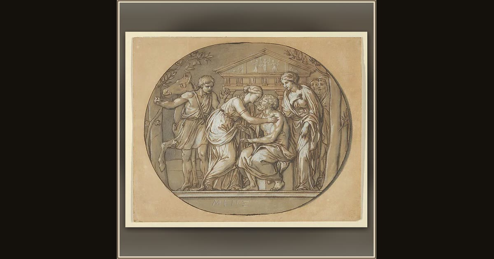

Oedipus before the Temple of the Furies between his Daughters Antigone and Ismene
Anton Raphael Mengs · ca. 1760–61 · met
Mengs depicts Oedipus seated between Antigone and Ismene before the Furies' temple, with a horse at left; Antigone reports seeing Ismene approach on a colt (312). Explore its place in Sophocles's Plays, Oedipus at Colonus, line 319.